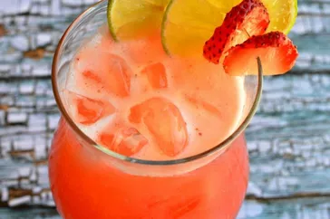

Straberry Juice Recipe

How to make Juice
First thing first, you need berries with bananas and add grinded meat with different flavors
of spicy dishes pepper garlic etc.
this is Afghan dish which has got global pupolirity and very tasty food
Ingredients
- straberries
- ice
- dates
- bananas
Steps to Make Straberry Juice
- mix straberries with bananas
- put some ice and dates
- mix them all together